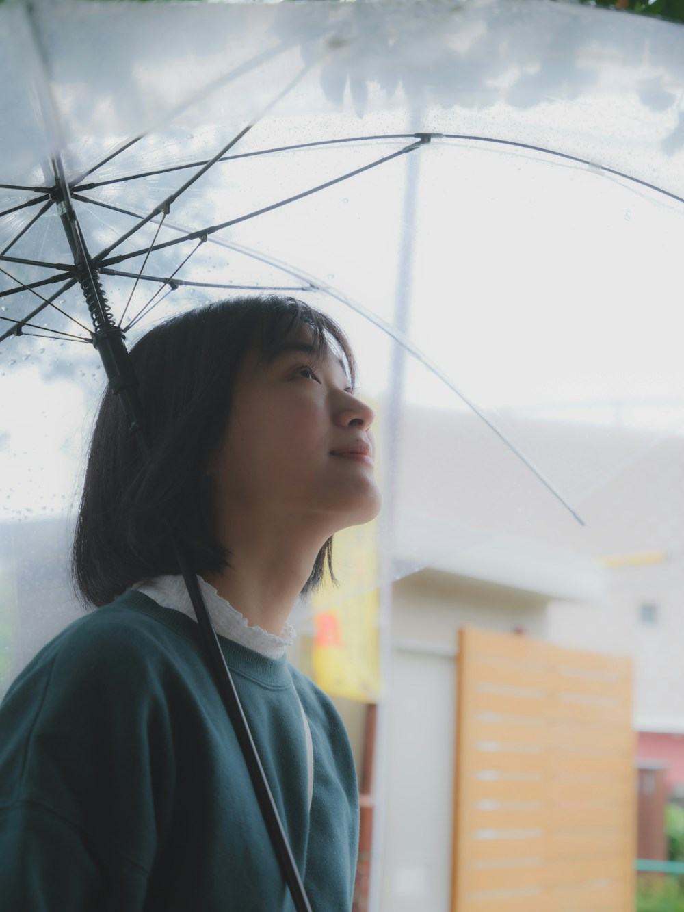
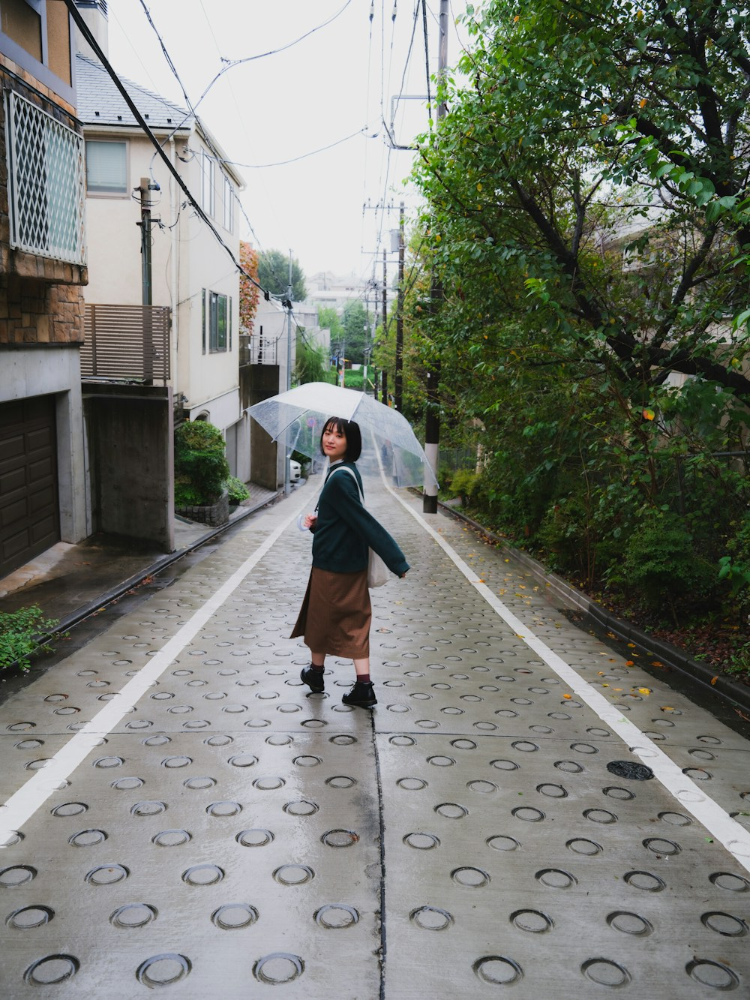

<title>Website Image Pack</title>
<meta name="claude:viewport-fit-sides" content="cover">
<link rel="stylesheet" href="https://fonts.googleapis.com/css2?family=Zen+Kaku+Gothic+New:wght@500;700&family=IBM+Plex+Mono:wght@400&display=swap">
<style>
/* Layout: an asset handoff sheet — two labeled sections (About, Staff), each a wrapping grid, then usage notes */
:root {
  --bg: #f5f3f1; --fg: #22201f; --muted: #6d6662; --card: #ffffff; --line: #e2dcd7; --accent: #b4423a; --code: #efebe7;
  --display: "Zen Kaku Gothic New", "Hiragino Sans", system-ui, sans-serif;
  --mono: "IBM Plex Mono", ui-monospace, Consolas, monospace;
}
@media (prefers-color-scheme: dark) { :root:not([data-theme="light"]) {
  --bg: #1a1817; --fg: #eeeae7; --muted: #a39b96; --card: #252220; --line: #38332f; --accent: #e07a70; --code: #2c2826; color-scheme: dark } }
:root[data-theme="dark"] { --bg: #1a1817; --fg: #eeeae7; --muted: #a39b96; --card: #252220; --line: #38332f; --accent: #e07a70; --code: #2c2826; color-scheme: dark }
body { background: var(--bg); color: var(--fg); font-family: var(--display);
  padding-left: max(16px, env(safe-area-inset-left, 0px)); padding-right: max(16px, env(safe-area-inset-right, 0px)); padding-block: 40px 56px; }
main { max-width: 1040px; margin: 0 auto; display: grid; gap: 40px; }
section { display: grid; gap: 14px; }
header, .intro { display: grid; gap: 8px; max-width: 64ch; }
h1 { margin: 0; font-size: 2rem; text-wrap: balance; }
h2 { margin: 0; font-size: 1.3rem; display: flex; gap: 10px; align-items: baseline; flex-wrap: wrap; }
h2 small { font-family: var(--mono); font-size: .75rem; color: var(--accent); font-weight: 400; letter-spacing: .04em; text-transform: uppercase; }
p, li { margin: 0; color: var(--muted); line-height: 1.6; }
.grid { display: grid; grid-template-columns: repeat(auto-fill, minmax(220px, 1fr)); gap: 16px; }
.grid.small { grid-template-columns: repeat(auto-fill, minmax(140px, 1fr)); }
figure { margin: 0; background: var(--card); border: 1px solid var(--line); border-radius: 6px; overflow: hidden; display: grid; align-content: start; }
figure img { display: block; width: 100%; aspect-ratio: 4 / 5; object-fit: cover; }
.small figure img { aspect-ratio: 1; }
figcaption { padding: 10px 12px; display: grid; gap: 3px; min-width: 0; font-size: .85rem; }
figcaption b { font-size: .95rem; }
figcaption a { color: var(--muted); }
.file { font-family: var(--mono); font-size: .72rem; word-break: break-all; }
a:focus-visible, button:focus-visible { outline: 2px solid var(--accent); outline-offset: 2px; }
ul { margin: 0; padding-left: 1.2em; display: grid; gap: 6px; max-width: 70ch; }
.code-wrap { position: relative; }
pre { margin: 0; background: var(--code); border: 1px solid var(--line); border-radius: 6px; padding: 14px; overflow-x: auto; font-family: var(--mono); font-size: .78rem; line-height: 1.55; color: var(--fg); white-space: pre-wrap; }
button { position: absolute; top: 8px; right: 8px; font: 500 .75rem var(--display); background: var(--card); color: var(--fg); border: 1px solid var(--line); border-radius: 4px; padding: 4px 10px; cursor: pointer; }
</style>
<main>
  <header>
    <h1>Website Image Pack</h1>
    <p>Images for the About and Staff pages. About photos are free Unsplash photos used as scenery, not as team members. Staff slots use placeholders until real staff photos are ready.</p>
  </header>

  <section>
    <h2>About page <small>3 photos · Unsplash License</small></h2>
    <p class="intro">Use these as mood or banner images. Don't caption them with names or job titles.</p>
    <div class="grid">
      <figure><figcaption><b>Rain, clear umbrella</b><span>Photo by <a href="https://unsplash.com/@sebaty_jp">花見 瀬田</a> on <a href="https://unsplash.com/photos/i3kCGLZlqfk">Unsplash</a></span><span class="file">about/about-rain-umbrella.jpg</span></figcaption></figure>
      <figure><figcaption><b>Rainy side street</b><span>Photo by <a href="https://unsplash.com/@sebaty_jp">花見 瀬田</a> on <a href="https://unsplash.com/photos/4UEinwqHhBw">Unsplash</a></span><span class="file">about/about-rainy-street.jpg</span></figcaption></figure>
      <figure><figcaption><b>Old town street</b><span>Photo by <a href="https://unsplash.com/@gakusuyama">Gaku Suyama</a> on <a href="https://unsplash.com/photos/HoREIWSmKxw">Unsplash</a></span><span class="file">about/about-kurashiki-street.jpg</span></figcaption></figure>
    </div>
  </section>

  <section>
    <h2>Staff page <small>illustrated placeholders · CC0</small></h2>
    <p class="intro">Five illustrated portraits for the staff cards. Swap in each person's real photo when you have it.</p>
    <div class="grid small">
      <figure><figcaption><span class="file">01-young-woman.svg</span></figcaption></figure>
      <figure><figcaption><span class="file">02-middle-aged-man.svg</span></figcaption></figure>
      <figure><figcaption><span class="file">03-older-woman.svg</span></figcaption></figure>
      <figure><figcaption><span class="file">04-young-man.svg</span></figcaption></figure>
      <figure><figcaption><span class="file">05-woman-bun.svg</span></figcaption></figure>
    </div>
  </section>

  <section>
    <h2>Instructions for your website project</h2>
    <p class="intro">Paste this into the other Claude project along with this page's link.</p>
    <div class="code-wrap">
      <button type="button" id="copy">Copy</button>
<pre id="brief">Add images from the "Website Image Pack" artifact to the site.

About page:
- Use about/about-rain-umbrella.jpg, about/about-rainy-street.jpg and
  about/about-kurashiki-street.jpg as banner or section images.
- Do not caption them with names or job titles; they are scenery, not staff.
- Add a credit line near each photo or in the footer:
  "Photos by 花見 瀬田 and Gaku Suyama on Unsplash" (link to unsplash.com/@sebaty_jp
  and unsplash.com/@gakusuyama).

Staff page:
- Use the illustrated portraits as the image on each staff card:
  01-young-woman.svg, 02-middle-aged-man.svg, 03-older-woman.svg,
  04-young-man.svg, 05-woman-bun.svg
- Keep real staff names and roles; set the image alt text to
  "Illustrated placeholder portrait" until real photos are added.
- Never use a stock photo of a real person as a staff member's photo.</pre>
    </div>
  </section>
</main>
<script>
document.getElementById('copy').addEventListener('click', e => {
  const t = document.getElementById('brief').textContent;
  navigator.clipboard.writeText(t).then(() => { e.target.textContent = 'Copied'; }).catch(() => {
    const r = document.createRange(); r.selectNodeContents(document.getElementById('brief'));
    const s = getSelection(); s.removeAllRanges(); s.addRange(r); e.target.textContent = 'Press Ctrl+C';
  });
});
</script>
